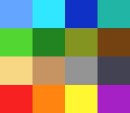

|
OpenSNES
Modern Open-Source SNES Development SDK
|
|
OpenSNES
Modern Open-Source SNES Development SDK
|
Family 6 (Colour & effects) · rung 6c.2 — shadow & tint.
Mood is colour. Nightfall, a dungeon, a cave — subtract a grey and the whole screen darkens. Underwater, poison gas, a lava cavern, a sepia flashback, the red flash of taking a hit — add a colour and everything takes that cast. The SNES does this to every pixel of a layer in one PPU pass, so a single register pair changes the entire scene's atmosphere for zero per-frame cost. It is the difference between one tileset and a tileset that reads as day, dusk, and midnight.

The single new idea: colour math against a fixed colour. The PPU takes the finished main-screen image and adds or subtracts a constant colour per layer — colorMathShadow() subtracts a grey (darken), colorMathTint() adds a colour (cast). This rests on the layers, tiles and palette you already know; the effect sits on top of them and touches no VRAM, CGRAM or OAM.
Because both effects share the one fixed-colour register and the single add/subtract bit, only one is active at a time — which is exactly why the demo cycles through them rather than combining them. The scene is a 4×4 chart of sixteen game-world colours, built procedurally (zero assets), so you can watch the transform land on every hue together.
Probe oracle: fx_state (0 none, 1 shadow, 2 underwater, 3 sunset) advances on each A press; the effect matches CGADSUB (add/subtract) and COLDATA (the fixed colour).
console, dma, background, colormath, input
← previous: transparency · colour math between two layers · → next in family: direct_color · the pixel byte is the colour